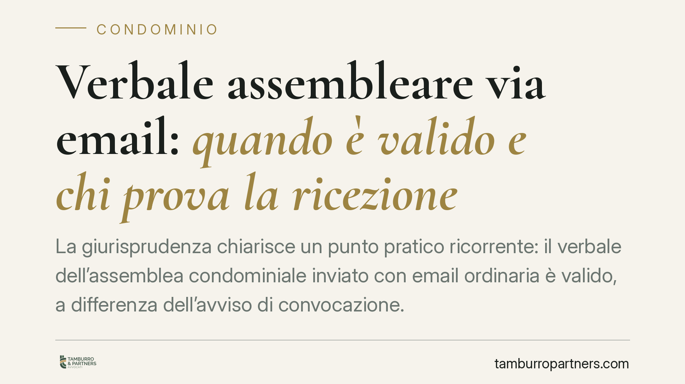

Verbale assembleare via email: quando è valido e chi prova la ricezione
La giurisprudenza chiarisce un punto pratico ricorrente: il verbale dell'assemblea condominiale inviato con email ordinaria è valido, a differenza dell'avviso di convocazione. Attenzione però al nodo della prova: spetta al condominio dimostrare quando il verbale è stato ricevuto, perché da quel momento decorre il termine per impugnare la delibera.

Il fatto
Succede spesso: l'assemblea si chiude, l'amministratore redige il verbale e lo trasmette ai condòmini con una normale email, senza ricorrere a PEC o raccomandata. È una prassi comoda e diffusa, ma fino a che punto regge sul piano giuridico?
La risposta, consolidata in giurisprudenza, distingue due momenti diversi del procedimento assembleare: la convocazione e la comunicazione del verbale. Il trattamento è differente, e capire perché evita errori costosi.
Inquadramento normativo
L'art. 66 delle disposizioni di attuazione del codice civile disciplina l'avviso di convocazione dell'assemblea. La norma richiede che l'avviso sia comunicato con mezzi che diano certezza della ricezione: posta raccomandata, PEC, fax o consegna a mani. Per questo l'email ordinaria non è considerata idonea a convocare validamente l'assemblea. Un vizio sulla convocazione può rendere annullabile la delibera adottata.
Il verbale, invece, non soggiace alla stessa regola. La sua comunicazione ai condòmini assenti serve a far decorrere il termine per l'impugnazione previsto dall'art. 1137 c.c.: trenta giorni, che per gli assenti decorrono dalla comunicazione del verbale (per i dissenzienti presenti, dalla delibera stessa). La legge non impone una forma vincolata per questa comunicazione. Di conseguenza, l'email ordinaria è uno strumento valido per trasmettere il verbale.
La distinzione è logica: la convocazione garantisce il diritto di partecipare e deve avere certezza assoluta; la trasmissione del verbale, invece, è il presupposto per far partire un termine di decadenza, e qui ciò che conta è stabilire con precisione la data di ricezione.
Implicazioni pratiche
Qui sta il punto delicato. Se il verbale è inviato via email ordinaria, il termine di trenta giorni per impugnare decorre dalla data in cui il condòmino ha ricevuto la comunicazione. Ma l'email ordinaria, a differenza della PEC, non genera automaticamente una prova della consegna.
L'onere di dimostrare la data di ricezione grava sul condominio, cioè su chi vuole eccepire la tardività dell'impugnazione. In concreto: se un condòmino assente impugna la delibera e il condominio sostiene che ha agito oltre i trenta giorni, è il condominio a dover provare quando quell'email è stata effettivamente ricevuta.
Per l'amministratore questo significa un rischio operativo preciso. L'email ordinaria è valida per comunicare, ma fragile sul piano probatorio. Se non è possibile dimostrare la data certa di ricezione, il termine di impugnazione resta di fatto aperto, con la delibera esposta a contestazioni anche a distanza di tempo.
Per i condòmini assenti, al contrario, l'email ordinaria non li pregiudica: il termine non parte finché non vi è prova della ricezione. Chi intende impugnare ha quindi un margine più ampio di quanto potrebbe sembrare.
Cosa fare in concreto
- Convocate sempre con mezzi idonei. Per l'avviso di convocazione usate PEC, raccomandata o consegna a mani: l'email ordinaria qui è inadeguata e vizia la delibera.
- Trasmettete il verbale con strumenti tracciabili. Pur essendo l'email ordinaria valida, consigliamo di inviare il verbale via PEC o raccomandata, così da precostituire la prova della data di ricezione.
- Conservate le evidenze. Se usate l'email ordinaria, conservate ricevute di lettura, log del provider e ogni elemento utile a documentare quando la comunicazione è arrivata al destinatario.
- Verificate il registro anagrafe. Mantenete aggiornati gli indirizzi (anche PEC) dei condòmini nel registro di anagrafe condominiale previsto dall'art. 1130 c.c.
- Controllate i termini prima di eccepire la tardività. Prima di contestare un'impugnazione come fuori termine, valutate se esistono prove solide della data di ricezione: senza di esse, l'eccezione difficilmente regge.
In sintesi
Email ordinaria sì per il verbale, no per la convocazione. Ma la validità formale non basta: senza prova della data di ricezione, il condominio rischia di non poter far valere la decadenza dall'impugnazione. La scelta del mezzo di trasmissione non è un dettaglio burocratico, ma una questione di gestione del rischio.
---
*Contributo informativo a cura di Tamburro & Partners - Avv. Giuseppe Tamburro. Non costituisce parere legale.*
Ogni condominio ha una storia a sé.
Se gestisci un'amministrazione e vuoi un confronto su una specifica questione condominiale, scrivi allo studio. Ti rispondiamo entro un giorno lavorativo.